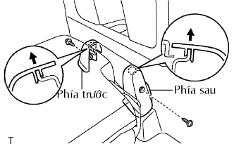
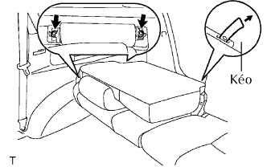
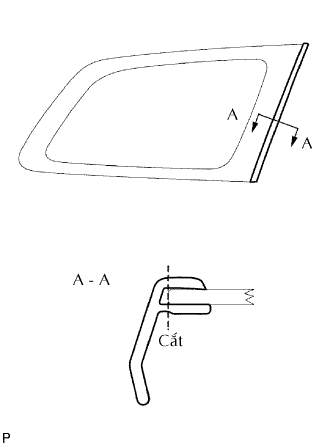
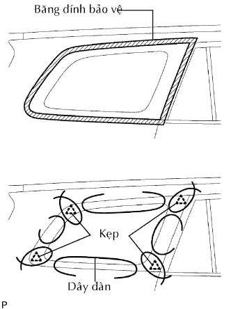
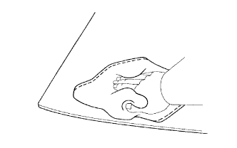
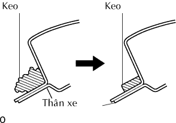

KÍNH CỬA SỔ TAI XE SAU > THÁO |
| 1. THÁO NẮP CHE GIÁ BẮT PHÍA TRƯỚC GHẾ SAU PHẢI |
|  |
Nghiêng lưng ghế hoàn toàn về phía trước.
Tháo vít.
Kéo nắp che giá bắt theo hướng chỉ ra bởi mũi tên trong hình vẽ để nhả khớp vấu và tháo nắp che giá bắt.
| 2. THÁO NẮP CHE GIÁ BẮT PHÍA SAU GHẾ SAU PHẢI |
| 3. THÁO CỤM GHẾ NO.2 PHÍA SAU |
|  |
Tháo 2 bulông.
Mở khoá các chân ghế bằng cách kéo ngang dây. Sau đó tháo ghế.
| 4. THÁO TẤM ỐP BẬU CỬA HẬU |
 |
Dùng một tô vít, nhả khớp 4 vấu hãm.
Dùng một dụng cụ tháo kẹp, nhả khớp 6 kẹp và tháo tấm ốp bậu cửa.
| 5. THÁO TẤM ỐP BẬU CỬA SAU PHẢI |
| 6. THÁO GIOĂNG CỬA SAU PHẢI |
| 7. THÁO CỤM ĐAI NGOÀI GHẾ SAU NO.1 BÊN PHẢI |
Tháo một phần đai ngoài No.1 ghế sau phải
| 8. THÁO CỤM ĐAI NGOÀI GHẾ SAU NO.2 BÊN PHẢI |
Tháo một phần đai ngoài ghế No.2 sau phải.
| 9. TẤM ỐP TRANG TRÍ BÊN TRONG TAI XE SAU PHẢI |
| 10. THÁO TRANG TRÍ TRỤ TAI XE SAU PHẢI |
| 11. THÁO NẸP TRONG DỌC TRẦN XE PHÍA TRÊN BÊN PHẢI |
| 12. THÁO TAY NẮM |
 |
Dùng tôvít, nhả khớp 4 vấu và mở 2 nắp.
Tháo 2 vít và tay nắm.
| 13. THÁO CỤM ỐP TRẦN XE |
Tháo một phần ốp trần xe (Xem trang Kích chuột vào đây).
| 14. THÁO NẸP KÍNH TAI XE SAU PHẢI |
|  |
Dùng một dao, cắt gioăng như được chỉ ra trên hình vẽ.
Tháo nẹp còn lại.
| 15. THÁO CỤM KÍNH TAI XE SAU PHẢI |
|  |
Ngắt giắc nối.
Từ bên trong, hãy luồn dây thép giữa thân xe và kính cửa sổ tai xe sau như được chỉ ra trên hình vẽ.
Hãy buộc các vật thể có thể dùng làm tay cầm (như các khối gỗ) vào cả hai đầu dây.
Cắt hết keo bằng cách kéo dây thép quanh kính cửa sổ tai xe sau.
Dùng giác hút, tháo kính cửa sổ tai xe sau.
| 16. LÀM SẠCH CỤM KÍNH CỬA HẬU |
|  |
Làm sạch các mép ngoài của kính bằng xăng trắng.
| 17. LAU SẠCH THÂN XE |
|  |
Lau và sửa lại hình dạng mặt tiếp xúc của thân xe.
Trên mặt tiếp xúc của thân xe, hãy dùng dao cắt phần keo thừa như được chỉ ra trên hình vẽ.
Lau sạch mặt tiếp xúc của thân xe bằng dung dịch.